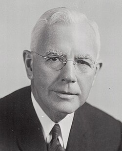

John McCone
CIA director, 1902 to 1991

A businessman who chaired the Atomic Energy Commission from 1958 to 1961, then served as Director of Central Intelligence from November 1961 to April 1965, succeeding Allen Dulles after the Bay of Pigs. He was a key figure during the Cuban Missile Crisis. 1
A 1983 Mother Jones investigation described him as a member of the Knights of Malta while he ran the CIA; he never acknowledged it. 2,3
William Lester's disputed November 1963 Kennedy memo, which asks the CIA to organize its UFO files, is addressed to him. 4
Open in the interactive Watcher
Related
- Atomic Energy Commission Chaired the AEC, 1958 to 1961
- CIA CIA director, 1961 to 1965
- Order of Malta headquarters Knights of Malta
Sources
- John A. McCone Wikipedia
- Their Will Be Done (Martin A. Lee) Mother Jones, July 1983
- Who Are the Knights of Malta — and What Do They Want? Foreign Policy, Jan. 19, 2011
- Is that JFK memo to the CIA about UFOs real? Life's Little Mysteries (Space.com), via NBC News, Apr. 21, 2011